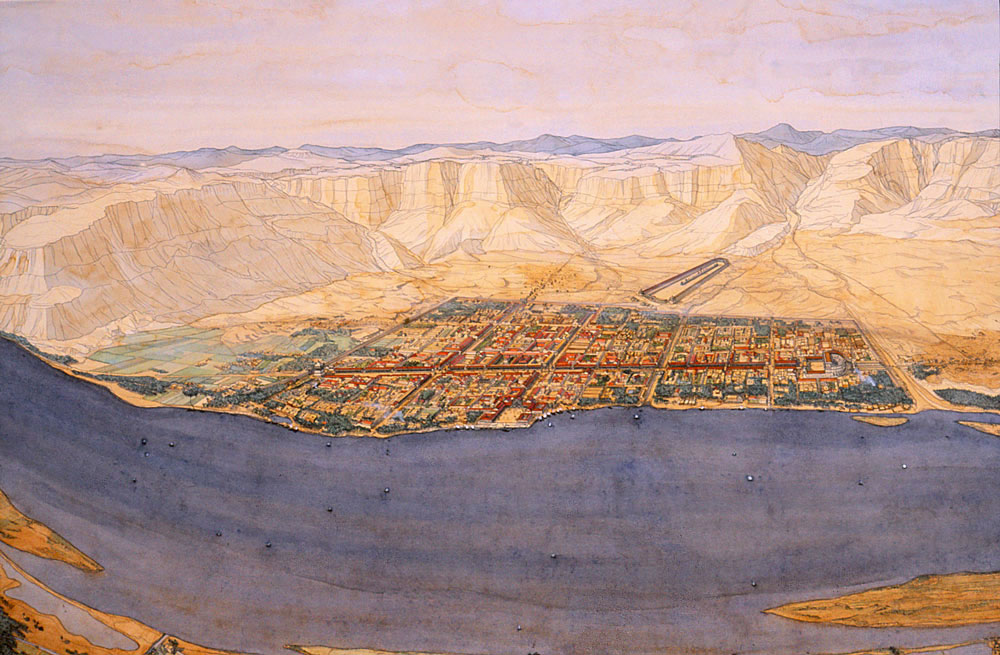
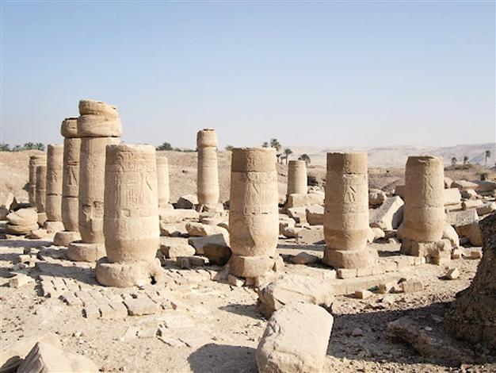
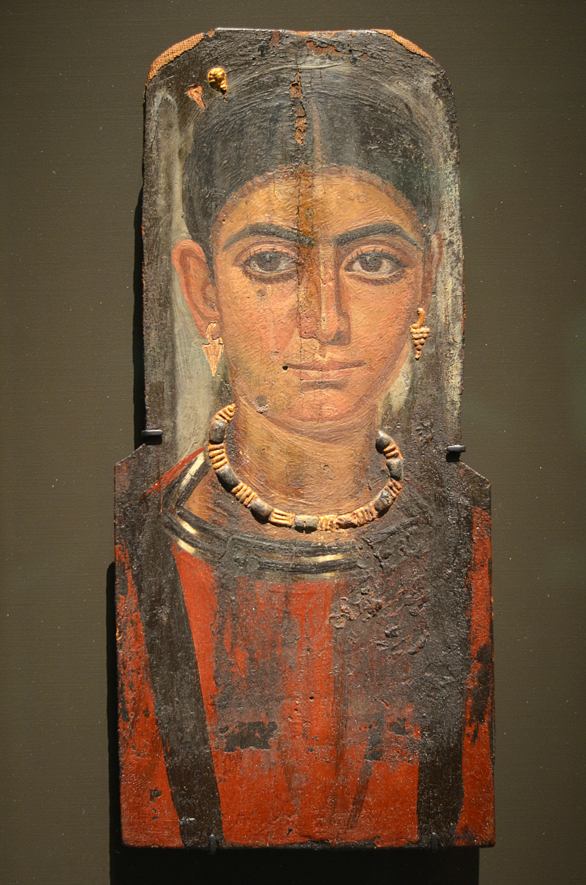

Image 1 - "Antinoe"
The city of Antinoopolis was founded on October 30th, 130 AD by Emperor Hadrian in honor of his deceased lover, Antinoe. Antinoe drowned in the Nile near the present location of Antinoopolis so out of his love for him, Hadrian commissioned the first Roman city to be built in Egypt, complete with hundreds of statues of Antinoe. Not only were there statues, however, but temples as well. Emperor Hadrian turned Antinoe in to a deity and had him worshiped after his passing. His deification was not only justified by Roman standards, however. In Egyptian culture its traditional to say that those who drown in the Nile will become the god Osiris. This belief further validated Hadrian’s claim (Bard 159-160). The city was populated by Greeks imported from other regions but mostly Faiyhum. To draw in the new Greek citizens, they were promised the right of Conubium, also known as the right to marry Egyptian women without giving up the privileges of being a Greek (Stillwell). The Greeks were also promised exemption of the 10 percent tax on property, slaves, and imported goods, as well as exemption from the poll tax. Later, under emperor Antoninus Pius’ rule land in the area was given to veterans through land allotment (Bard 159). Under emperor Diodetian Antinoopolis became the capital of the Thedaid nome (Stillwell). The city was eventually abandoned sometime in the 10th century for reasons not yet known (Bard 161).
Geography
Image 2 - "Artist recreation of the site while occupied"
The site’s location made it significant to trade due to the fact that it was on the Via Hadriana, which was a road the led to a port on the Red Sea. Its location in southern Egypt at the southernmost extent of what was then Roman controlled land was a statement of power for the Roman government. The city was located on the east bank of the Nile which is concurrent with the Egyptian practice of building cities on the east, as it was the land of the living. Along the east side of the city was a large natural valley, or wadi, which led past the city walls into a desert plain toward the hippodrome. The wadi was formed due to the water drainage from the desert hill around Antinoopolis (Bard 159-160).
Description
Image 3 - "The remaining pillars of Antinoopolis"
The city was constructed in the roman style, on a grid plan and enclosed within a double enclosure wall that bordered all sides of the city except the side were the Nile ran. The city had two major streets, known as the cardo and decumanus major, which were both lined with Doric columns and statues of Antinoe. The streets were both 16m wide and the columns formed 2m wide shaded walkways on either side of the streets. The cardo began in the northern shrine to Antinoe and ended 1622m later near the theater to the south. Decumanus major started at the triumphal arch on the west and ended 1014m later at an eastern gate into the city. The triumphal arch, intended to be viewed from the Nile, was comprised of a two story triple-arched passageway and was decorated with triglyphs. In front of the arch were two large statues of Antinoe which stood on pedestals. The street’s intersection was adorned by four large granite Corinthian columns that stood on platforms. On top of the columns were statues of Antinoe and Emperor Alexander Severus. The later added in 233 AD in commemoration of his victory over the Persians. The largest surviving building of Antinoopolis is the main public bath house, which is along the decumanus major. Past the eastern gate and out of the city was the hippodrome, in which residents of the city could enjoy chariot races. The hippodrome was 307m long and 77m wide and was in the traditional roman style of a rectangle with a semicircle at one end. The theater of Antinoopolis was at the far end of the cardo and was built out of white marble. This semicircular structure had a large orchestra and was decorated with Ionic columns, as well as two large gates. The northern gate was especially noteworthy as it had large Corinthian columns with long protruding corners. The main buildings of the city were oriented around the main intersection of the cardo and decumanus major creating a large social center. At the northern end of the cardo was a large monument of Antinoe where citizens of Antinoopolis would venerate the god (Bard 160-161).
Excavations
Image 4 - "Funarary Portrait"
The first official excavation at the site was by the archaeologist Albert Jean Gayet in 1896 through 1912. He discovered that at the site was an Egyptian temple dedicated to Ramesses II that was previously unknown and obviously ignored by the Romans who settled there. Gayet also excavated several cemeteries outside the city (Bard 160). The most interesting part about these graves, however, is the painted masks known as the Fayum Mummy Portraits which depicted very life like images of the deceased (Boles). John Johnson was the next to excavated the site in 1914 with the intent to unearth papyri (Bard 160). The many of the documents Johnson found were classical plays from a range of classical authors, others were governmental documents, and the Two Theocritus Papyri. This is significant because it shows that the literature originated from outside of Egypt and therefore shows the diffusion of knowledge (Roberts 318-319). Next, was Evaristo Breccia, an Italian archaeologist who excavated the site in the 1930’s. This led to further Italian led excavations in the 1960’s by the Institute of Papyrology of Florence who was working in collaboration with the University of Rome. Together they found a temple dedicated to Antinoe and all of the 500,000 jars left as offerings to the god. Today, the Institute of Florence has continued to excavate the site with the intent of discovering its reason for abandonment in the 10th century (Bard 160-161).
Results
Gayet’s discoveries, especially those of the Fayum Mummy Portraits, are significant because they show the way the cultures intermingled. The masks/paintings are reminiscent of the Egyptian way of honoring the dead in sarcophagi yet the art style is very Roman or Greek (Boles). Johnson’s finds, in regards to the papyri, help one visualize the people at the site. The plays tell us what they did for amusement and the government documents give one insight into the political workings of the city (Roberts 318-320). The temple of Antinoe found by the Italian archaeologists illustrates the importance of Antinoe to the city and the people of the city. The Institute of Florence’s current excavations will be very helpful in determining the reasoning behind the abandonment of the site, which will give us further insight into the life of the people who lived there (Bard 161).
Conclusion
Little is left standing above ground due to the fact that many of the bricks and stone were used to build sugar factories in El-Rohda (Stillwell). Then the remaining good marble, granite, and limestone was taken to be used in a bridge at the town of Reramoon. Due to this destruction of the site there is too little known about the day to day life of the people who lived there. Many of the major monuments of Antinoopolis such as the theater, temple, and hippodrome have been found but there has been almost no excavations of private homes and administrative buildings. This gives us little information about the people who lived in Antinoopolis. This is in large part due to the fact that many of the excavations focused on object and papyri retrieval (Bard 161). There is still much to be learned from the site in the excavations to come. This site is important because it is the only roman style city in Egypt. Its relatively late foundation makes it stand out among the many cities that were often founded all the way back in pre-dynastic times. Antinoopolis was a statement that the Romans imposed upon the Egyptian people. Its grand monuments and streets spoke to the power of the Roman government and showed Egyptians how capable the empire was. Antinoopolis is also notable because it showed clearly how Roman and Egyptian cultures intermingles especial in the art and grave goods like the Fayum Mummy Portraits. The unique qualities of the site make it hard to compare to other Egyptian sites as it is only Egyptian in location. Its culture is so vastly different from the rest of Egypt yet there are still elements of Egypt within (Bard 159-162).
Sources
Bard, Kathryn A. Encyclopedia of the Archaeology of Ancient Egypt. New York, Routledge, 1999. Accessed 6 Nov. 2016.
Boles, Dioscorus. Albert Gayet, The Archaeologist of Antinoopolis. On Coptic Nationalism14 Jan. 2014. Accessed 8 Nov. 2016.
Explorer, Jayhawk. Portrait Of A Woman. 2012Accessed 5 Nov. 2016.
Hürriyet, . Egypt as experts seek ways to save ancient Antinoopolis. 2013Accessed 2 Nov. 2016.
Kleis, Jen. Antinoos statue in Delphi. 2005Accessed 5 Nov. 2016.